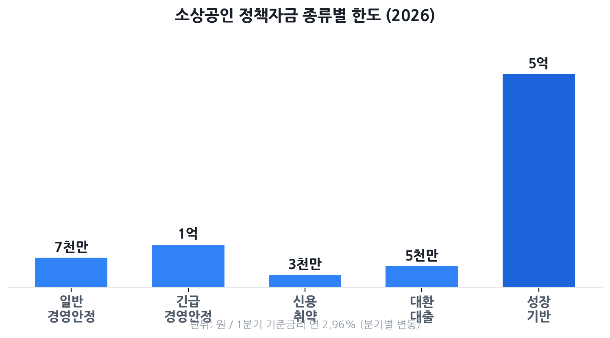

소상공인 정책자금 종류와 신청법 2026
— 소진공 직접·대리대출, 금리·한도·자격 총정리
자금이 필요한데 어디에 신청해야 할지 모르는 소상공인이 많습니다. 2026년 소상공인 정책자금은 총 3조 3,620억 원 규모로 운영되며, 금리는 연 2.96%대부터 시작합니다. 시중은행 대출보다 금리가 낮지만, 자금 종류가 열 가지가 넘고 직접대출·대리대출로 창구도 나뉩니다. 어느 자금에, 어떤 방식으로 신청하느냐에 따라 승인 여부와 금리가 달라집니다. 이 글에서 2026년 기준 자금 종류별 조건을 한 번에 정리합니다.
- 임대료·인건비·재료비 등 운영 자금이 부족한 자영업자
- 신용 점수가 걱정돼 정책자금 신청을 망설이고 있는 분
- 직접대출과 대리대출 중 어디에 신청해야 할지 헷갈리는 분
- 신청했다가 거절된 경험이 있어 이유를 알고 싶은 분
- 대출 외에 노란우산공제 등 연계 혜택도 챙기고 싶은 분

소상공인 정책자금이란?
소상공인 정책자금은 소상공인시장진흥공단(소진공)이 중소벤처기업부 위탁을 받아 운영하는 정부 융자 제도입니다. 시중 금융기관 대출보다 훨씬 낮은 정책금리를 적용하고, 거치기간(이자만 내는 기간) 2년을 포함해 최대 5~10년까지 분할 상환할 수 있어 월 상환 부담이 낮습니다.
2026년 기준 시중 은행 소상공인 대출 금리가 통상 연 5~8% 안팎인 데 비해, 정책자금 기준금리는 연 2.96%대(2026년 1월 기준, 이후 분기별 변동)에서 시작합니다. 일반경영안정자금처럼 기준금리에 가산금리를 더하는 변동금리 상품과, 대환대출처럼 고정금리(연 4.5%)로 운영되는 상품이 혼재합니다.
2026년 전체 예산은 3조 3,620억 원(중소벤처기업부 발표)으로, 예산 소진 시 접수가 조기 마감될 수 있습니다. 인기 자금은 접수 첫날 또는 첫 주에 마감되는 경우가 잦으니, 자격이 된다면 접수 시작일에 바로 신청하는 것이 유리합니다.
나는 신청 자격이 되나? — 소상공인 기준 자가진단
정책자금 신청의 첫 관문은 소상공인 해당 여부 확인입니다. 「소상공인 보호 및 지원에 관한 법률」에 따라 아래 기준을 모두 충족해야 합니다.
업종별 상시근로자 기준
- 일반 업종(도소매업, 음식점업, 서비스업 등): 상시근로자 5인 미만
- 제조업·건설업·운수업·광업: 상시근로자 10인 미만
여기서 '상시근로자'란 사업주를 제외한 실제 고용 인원입니다. 아르바이트·파트타임도 근로시간 환산 후 포함될 수 있으므로, 고용보험 피보험자 수를 기준으로 확인하는 것이 가장 정확합니다.
공통 자격 요건
- 사업자등록증이 있는 개인사업자 또는 소기업 법인 대표
- 신청일 현재 휴업·폐업 상태가 아닐 것
- 세금(국세·지방세) 체납이 없을 것
- 금융기관 대출 연체가 없을 것
- 융자 제외 업종이 아닐 것(유흥·향락업 등)
2026년 자금 종류 비교표
2026년 소진공 정책자금은 크게 경영안정·신용취약·성장기반 세 축으로 구성됩니다. 내 상황에 맞는 자금 유형을 먼저 고른 뒤 신청해야 서류 준비와 심사 시간을 줄일 수 있습니다.
| 자금 종류 | 대상 | 금리(연) | 한도 | 대출 방식 |
|---|---|---|---|---|
| 일반경영안정자금 | 업력 무관 소상공인 (운전자금) | 기준금리 +0.6%p (변동) | 최대 7천만 원 | 대리대출 |
| 긴급경영안정자금 | 재해 피해 또는 일시적 경영위기 소상공인 | 재해: 연 2.0%(고정) 경영애로: 기준금리(변동) |
재해 최대 1억 원 경영애로 최대 7천만 원 |
대리대출 (일부 직접대출 가능) |
| 신용취약소상공인자금 | NCB 839점 이하 중·저신용 소상공인 | 기준금리 +1.6%p (변동) | 최대 3천만 원 | 직접대출 |
| 대환대출 | 고금리 대출 전환 희망 (NCB 919점 이하) | 연 4.5% (고정) | 최대 5천만 원 | 대리대출 |
| 재도전특별자금 | 재창업·채무조정 성실 이행 소상공인 | 기준금리 +0.4~1.6%p (유형별) | 최대 7천만~2억 원 (유형별) | 직접대출 |
| 청년고용연계자금 | 만 39세 이하 청년 소상공인 또는 청년 고용 매장 | 기준금리(변동) | 최대 7천만 원 | 대리대출 |
| 성장기반자금(혁신성장촉진·상생성장 등) | 성장 가능성 있는 소상공인·소공인 (시설자금 포함) | 자금별 별도 고시 | 최대 5억 원 | 직접대출 |
기준금리는 소진공이 분기별(매년 1·4·7·10월 10일)로 고시하며, 2026년 1월 기준 연 2.96% 수준입니다. 따라서 일반경영안정자금의 실제 금리는 2026년 1분기 기준 약 연 3.56%(2.96%+0.6%p)에 해당합니다. 비수도권 사업자는 어느 자금이든 0.2%p 우대금리가 추가 적용됩니다.
직접대출 vs 대리대출 — 창구 차이와 선택 기준
정책자금은 소진공이 직접 심사해서 내주는 직접대출과, 소진공 확인서를 발급받아 시중은행에서 추가 심사를 거치는 대리대출로 나뉩니다. 이 구분이 단순히 신청 창구의 차이처럼 보이지만, 실제로는 심사 기준·승인 속도·금리가 달라지기 때문에 내 상황에 맞는 방식을 선택하는 것이 중요합니다.
| 구분 | 직접대출 | 대리대출 |
|---|---|---|
| 심사 주체 | 소상공인시장진흥공단(소진공) | 소진공 확인 후 시중은행 추가 심사 |
| 취급 자금 | 신용취약자금, 재도전특별자금, 성장기반자금 등 | 일반경영안정자금, 긴급경영안정자금, 대환대출, 청년고용연계자금 등 |
| 접수 시기 | 매월 첫째 주 | 매분기 첫째 주 |
| 승인 소요 기간 | 통상 2~4주 | 통상 2~4주 (은행 내부 심사 기간 포함) |
| 신용 요건 | 자금별 상이 (신용취약자금은 저신용자 대상) | 은행 자체 기준도 충족 필요 — 신용점수 높을수록 유리 |
| 유리한 경우 | 신용점수 높고(NICE 800점 이상) 매출 안정적 | 업력 짧거나 담보·보증 부족, 신용취약자(신용취약자금 제외) |
2026년부터는 대리대출의 비대면 원스톱 신청이 단계적으로 확대되고, 토스뱅크 등 인터넷전문은행도 대리대출 취급 기관에 포함돼 접근성이 높아졌습니다(중소벤처기업부 발표).
신청 절차 4단계
소상공인 정책자금 신청은 소상공인정책자금 누리집(ols.semas.or.kr)에서 온라인으로 진행하는 것이 기본입니다. 공동인증서(구 공인인증서)가 필요하니 미리 준비해두세요.
-
자가진단 및 자금 선택
소상공인 해당 여부(업종·상시근로자 수), 세금 체납·연체 여부를 먼저 점검합니다. 내 상황(운전자금 부족·위기·저신용·성장·재도전)에 맞는 자금 유형을 위 비교표를 참고해 선택합니다. -
구비서류 준비
공통 서류: 사업자등록증명, 부가가치세 과세표준증명원, 국세·지방세 납세증명서(완납증명), 표준재무제표증명. 자금별 추가 서류: 임대차계약서, 최근 3개월 매출 내역(카드 전표 또는 POS 매출 데이터), 재해 피해 확인증(긴급경영안정·재해 소상공인의 경우). 모든 서류는 신청일 기준 30일 이내 발급본이어야 합니다. -
온라인 신청서 작성 및 제출
ols.semas.or.kr 접속 → 공동인증서 로그인 → 해당 자금 신청 메뉴 선택 → 사업자등록번호·업종·업력·자금 용도·금액 입력 → 서류 PDF 업로드 → 접수번호 발급. 대리대출의 경우 소진공 심사 후 '지원 대상 확인서'가 발급되면, 이를 지참해 지정 은행을 방문하거나 비대면 은행 앱에서 추가 심사를 진행합니다. -
심사 → 승인 → 약정·실행
신용도·사업성 평가 후 승인이 나면 약정을 체결하고 대출금이 지정 계좌로 입금됩니다. 신청부터 실행까지 통상 2~4주가 소요되므로, 자금이 급하다면 여유를 갖고 미리 신청해야 합니다.
거절 흔한 5가지 사유와 서류 준비 체크리스트
소상공인 정책자금 신청자 중 상당수가 서류 미비나 간단한 자격 오해로 탈락합니다. 아래 다섯 가지 사유를 미리 점검하면 재신청 없이 한 번에 통과할 가능성이 높아집니다.
-
① 세금 체납 — 가장 흔한 탈락 사유
국세 또는 지방세 체납이 1원이라도 있으면 자동 탈락입니다. 신청 전 홈택스(국세) 및 위택스(지방세)에서 체납 여부를 조회하고, 완납 후 납세증명서를 발급받으세요. 분납 약정 중이라도 현재 체납 상태로 분류될 수 있으니 반드시 확인합니다. -
② 융자 제외 업종으로 신청
유흥업소(나이트클럽·단란주점 등), 사행성 오락업, 도박 관련 업종 등은 정책자금 지원 대상에서 원천 제외됩니다. 자신의 업종 코드(업태·종목)가 제외 업종인지 공고문 별첨을 통해 사전 확인하세요. 유사 업종이라도 코드에 따라 가능·불가가 나뉩니다. -
③ 서류 미비 또는 기한 초과 발급
납세증명서, 부가세 과세표준증명원 등은 발급 후 30일이 지나면 효력이 없습니다. 특히 인터넷 발급본을 프린트해서 제출할 때 발급일을 확인하세요. 재무제표가 없는 영세 사업자는 소진공 지역센터에 미리 문의해 대체 서류를 확인해야 합니다. -
④ 금융기관 대출 연체
신청일 현재 은행·카드사·캐피탈 등 금융기관에 연체 이력이 있으면 탈락합니다. KCB(올크레딧) 또는 NICE신용평가 앱으로 연체 여부를 먼저 확인하고, 연체가 있다면 해소한 뒤 신청하세요. 연체 해소 즉시 승인되는 것은 아니며, 신용정보 반영까지 1~2개월이 걸릴 수 있습니다. -
⑤ 자금 용도 불명확 또는 사업계획 미흡
"운영 자금이 필요하다"는 막연한 서술로는 심사를 통과하기 어렵습니다. 임대료·인건비·원자재비 등 구체적인 용도와 금액, 향후 상환 계획을 자금 신청서에 명확히 적어야 합니다. 직접대출의 경우 소진공 직원과의 면담이 있을 수 있으니 사업 내용을 간결하게 설명할 준비를 해두세요.
노란우산공제 등 연계 혜택
정책자금 대출 이외에도 소상공인이라면 반드시 챙겨야 할 연계 혜택이 있습니다. 특히 노란우산공제는 정책자금 금리 우대와 절세 효과를 동시에 누릴 수 있습니다.
노란우산공제란?
노란우산공제는 중소기업중앙회가 운영하는 소기업·소상공인 전용 퇴직금 제도입니다. 매달 일정액을 납입하고 폐업·사망·노령 등의 사유 발생 시 공제금을 받는 구조로, 개인사업자에게는 별도의 퇴직금 제도가 없기 때문에 사실상 사업자 퇴직금 역할을 합니다.
소득공제 혜택
노란우산공제 납입액은 종합소득세 신고 시 연 최대 500만 원까지 소득공제를 받을 수 있습니다. 소득 구간별로 공제 한도가 다르며, 사업소득이 4천만 원 이하인 경우 최대 500만 원, 4천만~1억 원 이하는 300만 원, 1억 원 초과는 200만 원까지 공제됩니다. 세율에 따라 다르지만 연 소득 4천만 원 이하 사업자가 월 50만 원(연 600만 원, 한도 500만 원 적용)을 납입하면 최대 약 82만 5천 원(세율 16.5% 가정)의 세금을 줄일 수 있습니다.
정책자금 우대금리 연계
소진공 정책자금 신청 시 노란우산공제 가입자는 우대금리 적용 항목 중 하나로 인정됩니다. 아래 항목 중 해당하는 것이 있으면 추가 우대금리가 적용될 수 있습니다.
- 노란우산공제 가입자
- 자영업자 고용보험 가입자
- 제로페이·디지털 온누리상품권(카드·모바일) 가맹점
- 전통시장 화재공제·풍수해보험 가입자
- 소진공 직접대출 성실상환 이력자
- 비수도권 소재 소상공인(수도권 내 인구감소지역 포함) — 0.2%p 우대
경영안정 바우처(25만 원 지원금)
2026년에는 대출과 별개로 갚지 않아도 되는 경영안정 바우처 25만 원도 별도 운영됩니다(2026년 2월 9일 신청 시작, 총 예산 5,700억 원 규모). 매출 1억 400만 원 미만 소상공인이 대상이며, 임대료·4대 보험·주유비·공과금 등에 카드 포인트 형태로 사용할 수 있습니다. 정책자금 대출과 중복 수령이 가능하니 별도로 신청하세요.
자주 묻는 질문
Q. 소상공인 정책자금은 누구나 신청할 수 있나요?
「소상공인 보호 및 지원에 관한 법률」상 소상공인이라면 신청할 수 있습니다. 일반 업종은 상시근로자 5인 미만, 제조·건설·운수·광업은 10인 미만이어야 합니다. 세금 체납·금융기관 연체·유흥 업종에 해당하면 신청 자격이 없습니다.
Q. 직접대출과 대리대출 중 어느 쪽을 선택해야 하나요?
신용점수가 높고(NICE 기준 800점 이상) 매출이 안정적이면 직접대출을 우선 검토하세요. 업력이 짧거나 담보가 부족하면 은행 보증서를 활용하는 대리대출이 승인율 면에서 유리합니다. 직접대출은 매월 첫째 주, 대리대출은 매분기 첫째 주에 접수됩니다.
Q. 세금을 체납 중인데 신청할 수 있나요?
신청일 현재 국세·지방세 체납이 있으면 자동 탈락입니다. 체납을 완납하거나 분납 약정 후 납세증명서를 발급받은 뒤 신청해야 합니다.
Q. 대출받은 자금을 다른 용도로 써도 되나요?
안 됩니다. 신청 시 명시한 운전자금·시설자금 용도로만 사용해야 합니다. 용도 외 사용이 확인되면 대출금 전액을 즉시 환수당할 수 있습니다. 영수증·세금계산서를 꼭 보관하세요.
Q. 노란우산공제에 가입하면 정책자금 금리가 낮아지나요?
노란우산공제 가입자는 소진공 정책자금 신청 시 우대금리 항목 중 하나로 인정됩니다. 구체적인 우대폭은 자금 종류와 시기별 공고에 따라 달라지므로, 신청 전 공고문에서 우대 항목을 확인하세요. 금리 우대 외에도 연 최대 500만 원 소득공제 혜택이 있으니 가입 자체로도 이득입니다.
본 글은 소상공인시장진흥공단(semas.or.kr), 중소벤처기업부(mss.go.kr), 기업마당(bizinfo.go.kr), 토스플레이스 사장님 스토리 등 공개 자료를 바탕으로 2026년 6월 기준 작성됐습니다. 정책자금 금리는 분기별로 변동되며, 자금 종류·한도·자격 기준은 매년 공고로 변경될 수 있습니다. 신청 전 반드시 소상공인정책자금 누리집(ols.semas.or.kr) 또는 중소기업통합콜센터(1357)에서 최신 조건을 확인하세요. 본 페이지는 정보 제공 목적이며, 대출 승인을 보장하지 않습니다.